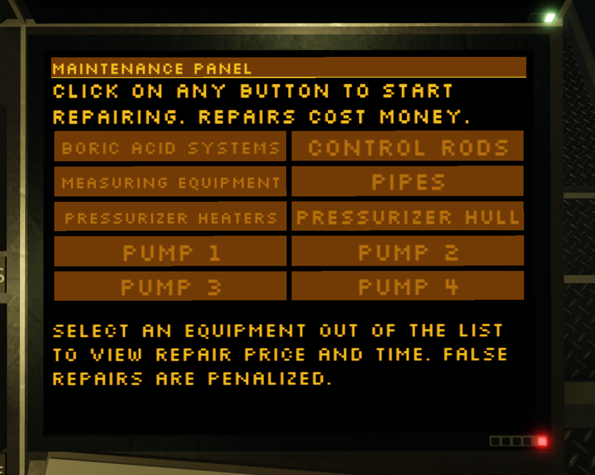

Shutdown Procedure
Instructions for safely shutting down the reactor.
Learn more
Note: The maintenance panel is only available when the reactor is in maintenance mode. To enable maintenance mode, see the assembly page. Furthermore, make sure you properly asses the malfunction before telling the maintenecne team to preform the repair. Otherwise, if you report a false malfunction, the repair team will take 5 minute break before doing any other repairs. This is their way of wasting your time for wasting their time on a useless repair.
Below is a table with the maintenance routinesand their cost.
| Repair | Description | Price |
|---|---|---|
| Boric Acid Systems | Entirely replace the boric acid system. | $50,000 |
| Control Rods | Repair control rod insertion system. | $250,000 |
| Measuring Equipment | Recalibrate the measuring equipment and replace any faulty components. | $25,000 |
| Pipes | Replace any damaged or worn pipes. | $250,000 |
| Pressurizer Heaters | Replace the pressurizer heaters. | $100,000 |
| Pressurizer Hull | Replace the pressurizer hull. | $175,000 |
| Coolant Pump | Replace any of the coolant pumps (1,2,3,4). | $150,000 |
| $750,000 | ||
Other important procedures when it comes to reactor operations.
Instructions for safely shutting down the reactor.
Learn more
Common issues, how to identify and resolve them.
Learn more
Procedures for regular maintenance and inspection of the reactor.
Learn more
Procedures for handling emergency situations in the reactor.
Learn more